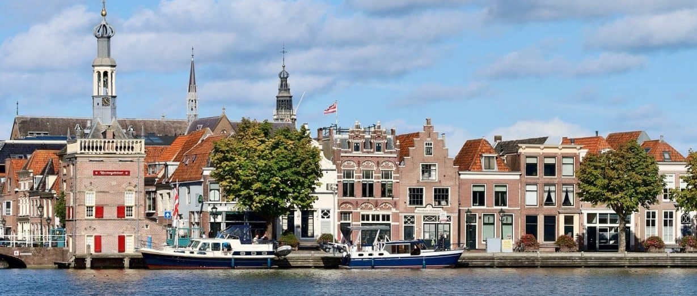

Deze website maakt gebruik van cookies om de website optimaal voor je te
laten functioneren.
Lees meer..

Hardlopen in Alkmaar
Welkom op deze website!
Alkmaar heeft veel mooie parken en natuurgebieden die dienen als
uitstekende locaties om in hard te lopen.
Ben jij op zoek naar leuke en korte hardlooproutes?
Dan ben je hier op het juiste adres! Deze site biedt een verzameling
aan routes om jou hardloopavontuur mee te starten.
Op de site zijn routes te vinden tussen
1 en 5 kilometer in Alkmaar. Je kunt hier dus ook
als ervaren hardloper op zoek naar kortere routes voor als je niet
zoveel tijd of energie hebt, maar wel je wilt blijven hardlopen.
Weet je niet waar je moet beginnen? Geen zorgen, want er is ook een
verzameling aan tips te vinden over hoe te beginnen, wat je moet
eten en welke kleding belangrijk is om te dragen.
Hoe moet ik beginnen?
Het beginnen met hardlopen is de grootste stap in je proces. Als je
het eenmaal 1 keer gedaan hebt, voelt het waarschijnlijk de volgende
keer al als een minder grote stap om het nog een keer te doen.
Maar hoe zorg je ervoor dat je het ook daadwerkelijk die ene keer gaat
doen?
Klik op onderstaande knop om tips te vinden over dit onderwerp!
Om een goed begin te kunnen maken aan al je hardloopavonturen is de
kleding die je aan gaat doen enorm belangrijk. Daar zit alleen 1
nadeel aan: er is zoveel om uit te kiezen! Maakt het uit of je
schoenen van 20 of 200 euro koopt? Of heb je nou per se een ‘goed’
hardloopshirt nodig?
Zeker als beginner is de de ‘learning-curve’ misschien groot. Daarom
is er uitleg over alle variaties te vinden op de pagina over
hardloopkleding. Klik op onderstaande knop om naar de pagina verwezen
te worden.
Stretchen, eten, drinken, niet eten, toch maar niet drinken? Chaos!
Yes, je hebt alles in de pocket en bent helemaal klaar om te beginnen?
Maar wat nu? Je moet natuurlijk een aantal stretches doen om blessures
te vermijden. Ook is het belangrijk om van tevoren de juiste maaltijd
te eten en niet teveel te drinken.
Over al deze onderwerpen is zoveel informatie te vinden, maar naar wie
moet je nou eigenlijk luisteren? Op de pagina over voorbereidingen
wordt alles op een rijtje gezet om je te helpen met het beginnen.